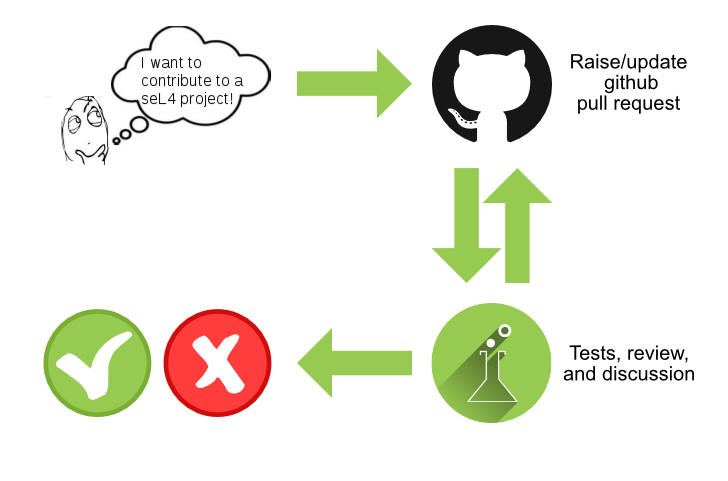

Contributing
We welcome contributions to the seL4 project sources. For contributions to this documentation site, please see our docs contribution guidelines.
Conventions
Please read and abide by the following conventions when contributing:
Large contributions
If you would like to make significant changes to the seL4 kernel, or any of its libraries, consider making an RFC. This will allow seL4 developers and the wider community to comment and approve of your design.
Developer Certificate of Origin (DCO)
The seL4 Foundation uses the same sign-off process as the Linux kernel. For every commit, use
git commit -s
to add a sign-off line to your commit message, which should come out as:
Signed-off-by: name <email>
By adding this line, you make the declaration that you have the right to make this contribution under the open source license the files use that you changed or contributed.
The full text of the declaration is at https://developercertificate.org.
The relevant github repositories are configured to only accept pull requests where all commits are signed off. There are no other signatures or legal documents required.
Some tips on using signed-off-by with git:
- signed-off-by is different from signing commits with a GPG key (commit -S)
- you can use
git commit --amend -sto sign off a single existing commit if you’ve forgotten - you can use
git rebase --signoff <base-branch>for signing off multiple commits on a whole branch - the DCO allows you to sign off commits for others – see https://developercertificate.org for details
-
you can add an alias for sign-off to your git config, so you don’t have to think about it. For instance:
git config alias.ci “commit -s"now
git ciwill commit with sign-off. The config command above is local for the current repository.
Review and Testing Process

The diagram illustrates the pull request review and testing process. For most of the repositories on https://github.com/seL4 and https://github.com/seL4proj, additional tests, quality checks, and where applicable the formal proofs can be run by people with at least the Reviewer role at the seL4 Foundation. Anyone can help review pull requests.
See also the pages on Pull Requests and Suggested Projects for suggestions on where to contribute.